Activity: Remove material from a base feature
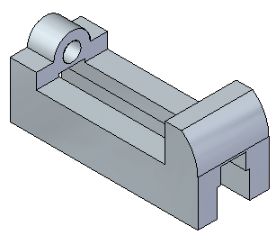
Overview
This activity demonstrates the process of removing material from a base feature.
Objectives
Create regions and use those regions to cut material from the part.
If you are using Internet Explorer and a video is not displaying in your training guide, click the Tools tab (or gear icon)→Compatibility View settings, and then clear the selection of Display intranet sites in Compatibility View.
Open the file you saved in the Activity: Create a base extruded synchronous feature.
Turn off the display of the Sketches and PMI collectors in PathFinder.
On the front face of the part, draw the sketch and add dimensions.
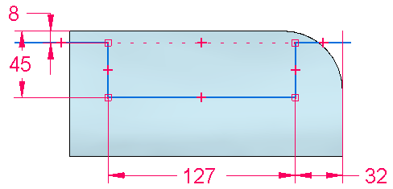
Select the region formed by the sketch.
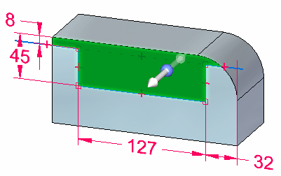
On the command bar, select the Through All extent type.
Click the extrude handle.
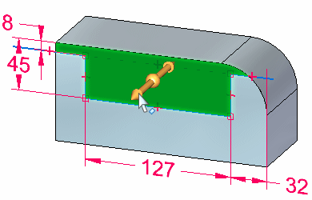
Move cursor to point the arrow inward to remove material. Click when arrow direction is towards the part.
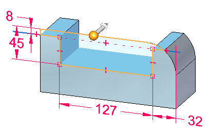
The material is removed.
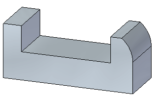
Draw a sketch on face (1) and add dimensions as shown. Ensure that the center of the circle aligns with the midpoint of the bottom edge.
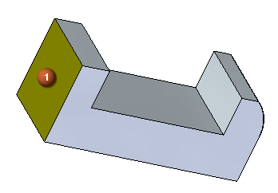
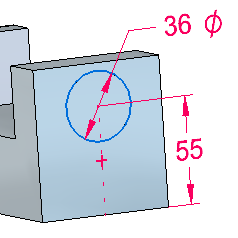
Draw a horizontal line passing through the circle center as shown.
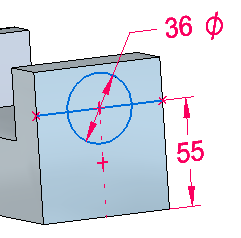
Select the region as shown. Click the extrude handle. On the command bar, click the Through Next option . Position the cursor on the inside of the part and click when arrow direction points towards the part.
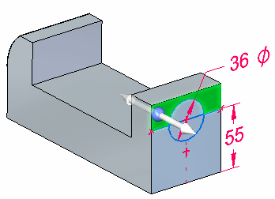
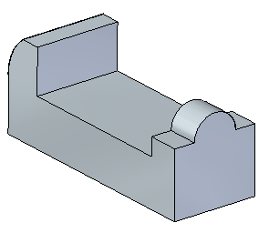
Draw an 18 mm diameter circle concentric with the existing circle.
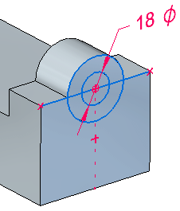
Select and accept the two regions bounded by the 18 mm diameter circle.
Use QuickPick if needed to select the two regions. You build a select set by selecting the first region and then, while holding down the Ctrl key, select an additional region.
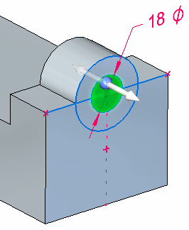
Click the extrude handle.
On the command bar, click the Through Next option.
Position the cursor inside of the part. To create the circular cutout, click when the extrude arrow points to the inside of the part.
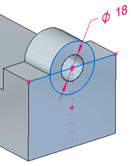
Draw the sketch on face (1) and center the sketch on the bottom edge of face. Use a sketch relationship to center the sketch.
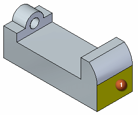
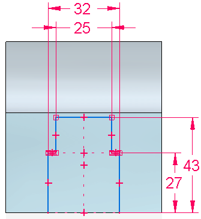
Select the region.
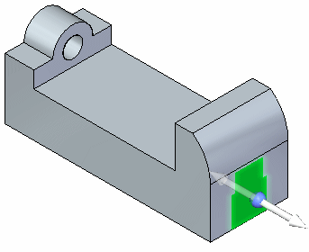
Click the extrude handle and set the extent option to Through All on the command bar. Position the cursor inside the part and click when the extrude arrow points inside the part.
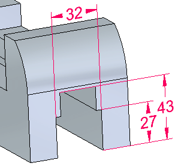
Turn off all sketches and PMI, and press Ctrl+I to display an isometric view.
Save the file. You will use this part in another activity.
In this activity you learned how to remove material from a base feature. A sketch was created and dimensioned. A region was selected representing the cross-sectional area to define the material to be removed.
Click the Close button in the upper–right corner of this activity window.